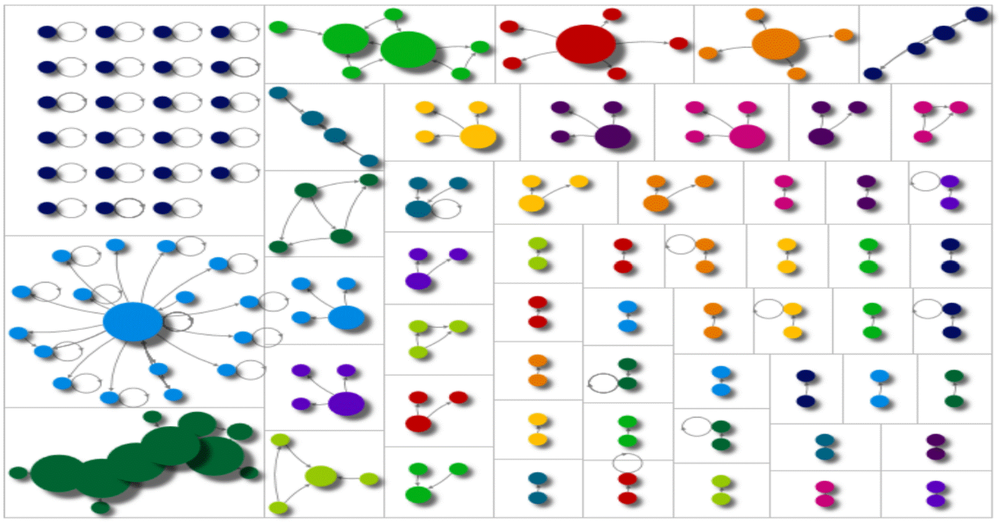

My Projects
Capstone Project: LIMS (Laboratory Infomation Management System) github repo
I have developed highly complicated laboratory infomation management system for an acutal client who was completely new to software development
from ground up with my wonderful teamates who were coming back from co-op program with actual industry experience.
This gave me excellent hand on experince on groudn up software development and undestand why so many projects fail.
Combining the experiece from using restraurant management system and knowing the user side of view and need,
this was excellent oppotunity to develope user friendly system and the flow of the highly complecated and large scaled software system.
Social Media Analysis on Covid pandemic and development of social media website
Phase1:Social Media Analysis github repo Phase1
Why did the phrase like "boomer remover" and "Ok, boomer..." became viral on social media during covid?üí† Social Media analysis using NodeXL 
According to my social media analysis of negativity toward boomer genearation,
the generational devide pre-existed prior to Covid pandemic. However it brought more attention of the generational divide into the surface.
One of the obstacle between the generation is the digital divide especially among the older generation.
With numeral years of customer service, POS and Human Computuer interaction knowlege combined,
it came to realization that it is extremy difficult to develop a system that most older people feel comforatble.
Phase2:Social Media site: Boomer ü§ù Millenials github repo Phase2
 This was my attempt to creat a social media site for older generation to promote the integration.
This was my attempt to creat a social media site for older generation to promote the integration.
However approaching the older generation is harder than you think. With security concern, it comfortability level and , it is most
Social Media Data Analysis Research github repo
Sentiment Analysis Regression analysis